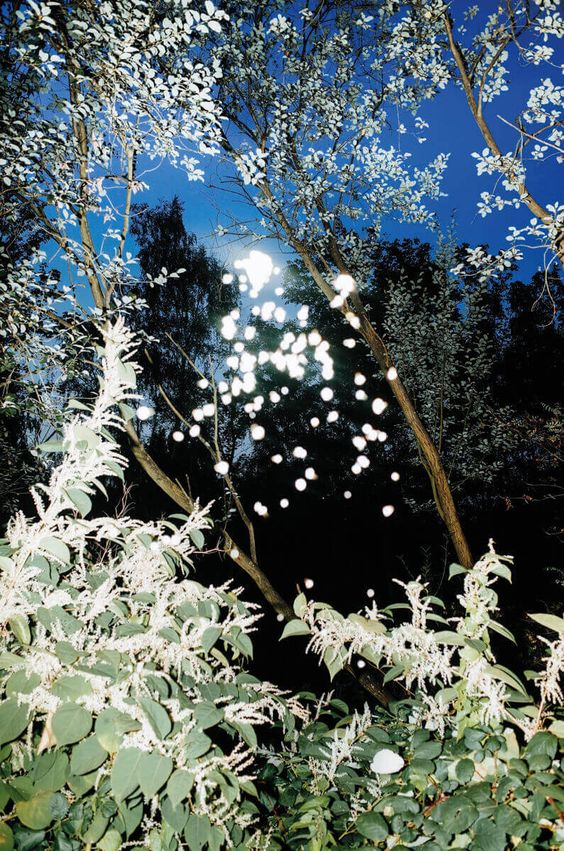
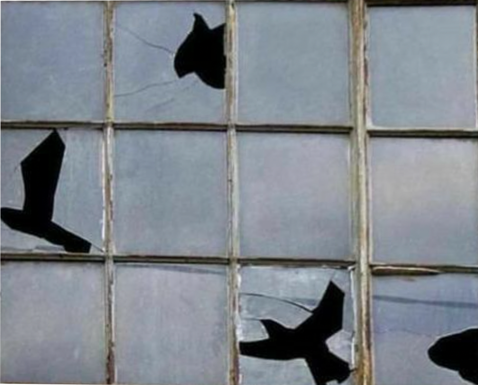
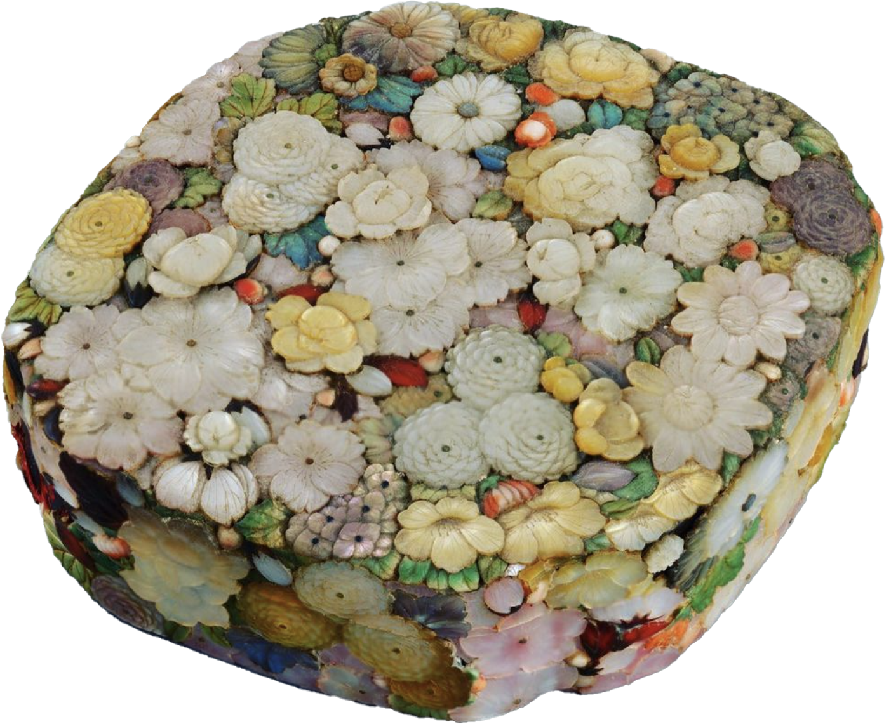
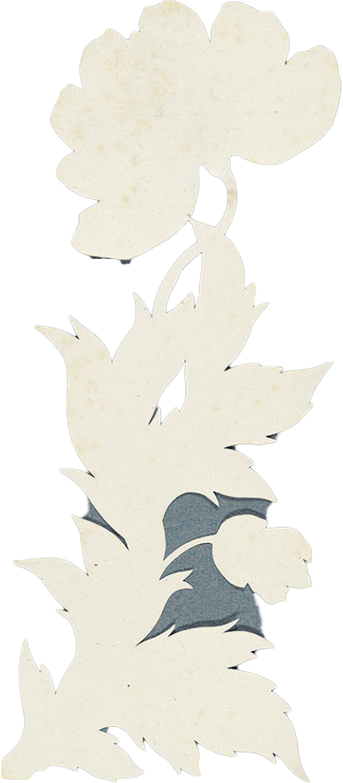
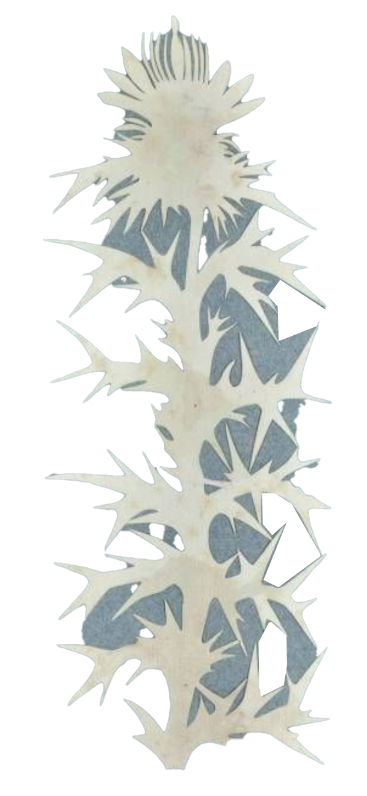
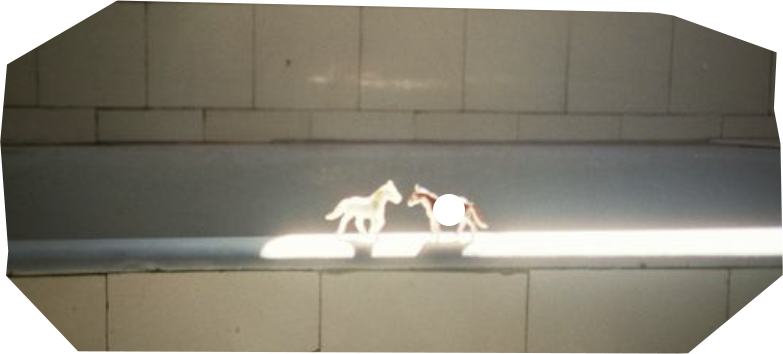
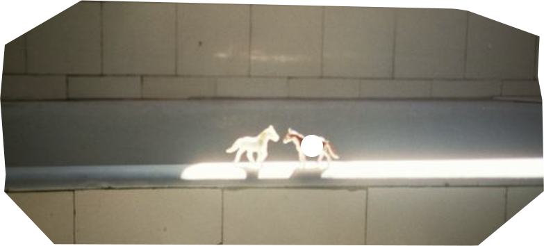

CAPS LOCK: How Capitalism Took Hold of Graphic Design, and How to Escape from It
by Ruben Pater
On design’s complicity in systems of oppression: critique and exit strategies from the author of The Politics of Design
Our current economic system could not exist without the number systems, coins, banknotes, documents, advertisements, interfaces, typefaces and information graphics that graphic designers have helped to create. Even speculative design and social design play their part in fueling the economic system. Capitalism has brought tremendous wealth, but it has not done so evenly. Extreme income inequality and environmental destruction is the price future generations have to pay for unbridled economic growth. The question is whether ethical graphic design is even possible under such conditions.
CAPS LOCK uses clear language and visual examples to show how graphic design and capitalism are inextricably linked. By sharing examples of radical design practices that challenge the supremacy of the market, it hopes to inspire a different kind of graphic design.
Ruben Pater (born 1977) was trained as a graphic designer and works in journalism, activism, education and graphic design under the name Untold Stories. His work has received several international prizes and he has participated in many exhibitions worldwide. His first book, The Politics of Design (2016), has been an inspirational sourcebook for design students, artists and visual communicators in many different places and contexts; Eye on Design wrote: "It’s the kind of literature that should be handed out to all students on their first days at art school, along with all the Albers, Berger, Benjamin and Sontag that form the backbone of the design curriculum―an up-to-date assessment of the landscape through which all modern visual practitioners must navigate."
I will love you until all the codes and hearts have been broken and until every anagram and egg has been unscrambled.
― Lemony Snicket, The Beatrice Letters
oh wait, what's that glowing square down there...hm....I wonder what that's all about





 
